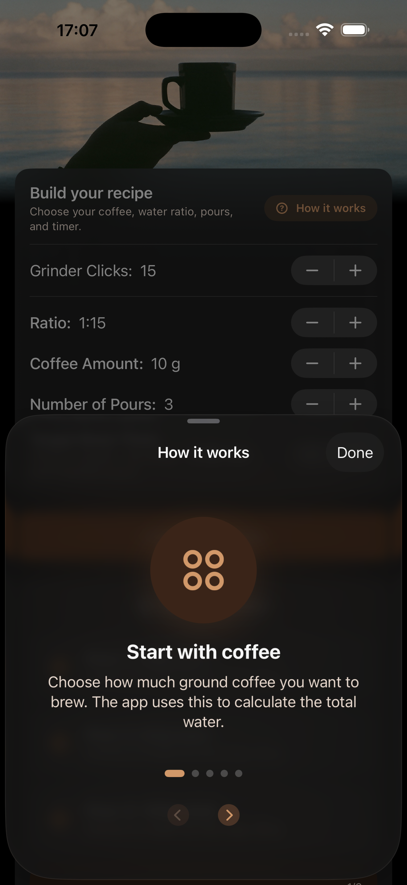
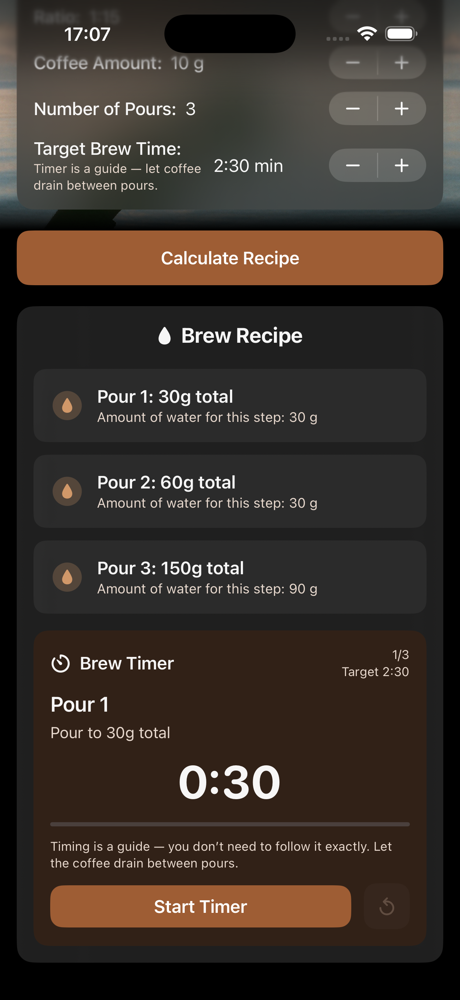
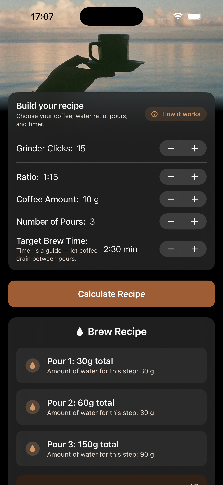

⚙️
Build your recipe
Set grinder clicks, coffee-to-water ratio, coffee amount, number of pours, and target brew time.
Brew Coffee Time turns your coffee amount, ratio, pours, grinder clicks and target time into a clear recipe — then guides you through each pour.



Choose the details you already know. The app calculates the total water, each pour target, and a practical brew timer so you can focus on making good coffee.
Set grinder clicks, coffee-to-water ratio, coffee amount, number of pours, and target brew time.
See cumulative water targets like “Pour 1: 30g total” and exactly how much water to add at each step.
The new guided timer walks you through each pour with pause, reset, and clear target timing.
The new “How it works” guide explains the important parts at the moment you need them.
Choose how much ground coffee you want to brew. The app uses this to calculate total water.
Adjust the ratio and number of pours without needing to calculate the recipe yourself.
Use time as a guide — let the coffee drain between pours, taste the result, and improve the next brew.
Designed for specialty coffee lovers and beginners who want better daily coffee without studying brewing theory.
The latest app design uses warm coffee colours, large readable controls, and simple cards that make the brewing flow easier to follow.
Download Brew Coffee Time and let the app calculate your recipe, pour targets, and brew timer.
Download on the App Store